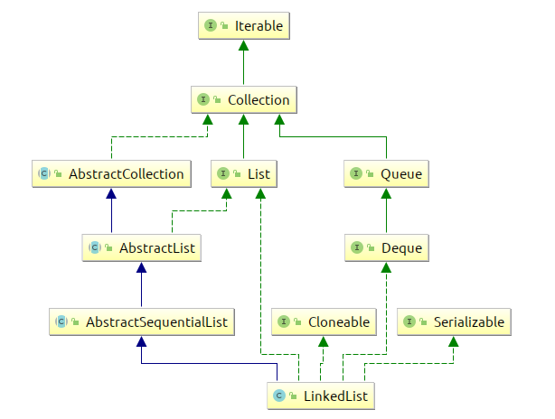

LinkedList源码思考
LinkedList源码阅读
这篇文章原本记于2018.11.30日,现整理一下发出来.
疑问
- 为什么
Queue这个接口要给两组,(一组是抛出异常,另一组是返回特殊值)为什么这么设计? Deque这个接口,继承Queue这个接口的时候,为什么还要把方法重新写一遍?如add定义完全一样为什么要写一遍?- 抛出异常的那一组接口,为什么在定义的时候没有写上要抛出的异常?
以上内容我简单查了一下,没找到相关的内容.
概览
有了ArrayList,LinkedList就有很多都知道了,有些重复的内容也不会说了,只会说一些比较疑惑的.
先来看下整体的结构

实现的接口
这个类相比ArrayList多了一层东西,还多了额外的一个Quere队列的接口.
看了下Quere接口的实现,核心只有三个接口,但是一共提供了6个,一组是可以抛出异常的,另一组只会返回0,null之类的
继承的Deque接口全名为 double ends queue 叫做双端队列.读作deck提供了两倍于Queue接口的方法,也提供了栈操作的方法.
从文档上来看,大部分操作功能是完全重叠的,只不过在命名上面有些差异.
文档
- 看了下
java提供的文档说明,上面写到这个LinkedList是一个双端链表,Doubly-linked list可以接受null值. - 查找的时候会查找最接近的元素.
- 不是同步方法,如果需要同步的话,需要用
Collections.syschronizedList()方法来包装这个链表 - 迭代的时候,只有迭代器的
add和remove方法可以修改,其他的任何修改都会抛出一个叫做ConcurrentModificationException的异常,这个特性叫做fail-fast
Node
和我猜测的一样,我寻思着,这个双端列表,应该会有一个内部类吧,封装双端链表的指针.什么的.
LinkedList提供了一个Node类型的内部类,是个static类型的class对象,可以不依赖于外部类进行实例化.
初始化
这个类在初始化的时候没有什么初始数组分配,所以不存在负载因子和初始容量什么的初始化方式,所以初始化方法就只有两个,一个是空构造器,另一种初始化方式内部调用了addAll()方法.很简单
内部参数
在LinkedList链表中有3个特有的参数,分别是头节点,尾节点,和size,很简单
内部的操作方法
linkFirst linkLast
添加第一个节点
由于是双端列表嘛,初始化的时候,新节点直接指向后一个,
然后再把后一个节点的prev指针指向前一个.
节点可以为null
同时会修改modCount 和 size值.
另一个linkLast 同理
linkBefore
在某些中间位置插入一个节点,操作也很简单,就是把前后节点拿出来,指针操作下
unlinkxxxx
这一堆我都视为工具方法,他们只是做了一些工具类应该做的操作,移除不同类型节点的操作.
而对链表的查找什么的,都在外层的其他方法里,没有写到这些工具方法中.
addAll
这个方法有点意思,在collections框架中,这种addAll都是使用的toArray方式处理各种东西的.可能是因为对象数组效率比较高?
这个类最终的做法是可以在任意位置,插入任意多数据,
所以有一个关于开始位置和结束为止的查找方法.
然后就是一个循环,把集合中所有的内容都挂成链表的节点,
最后处理一下尾部的节点. 记录下操作次数,重新生成长度什么的.
node(int index)
这个方法是用于返回检索内容的,他先判断东西在前一半还是后一半,前一半的话,就从前面查找,后一半的话就从后一半查找.
其他
其他的感觉没什么可说的,就是封装了一些检查操作,各种操作之前先检查,然后再获取相关的值
还有一堆重载,内部都是一样的东西,就是那些东西
检查方法
/**
* Tells if the argument is the index of an existing element.
*/
private boolean isElementIndex(int index) {
return index >= 0 && index < size;
}
/**
* Tells if the argument is the index of a valid position for an
* iterator or an add operation.
*/
private boolean isPositionIndex(int index) {
return index >= 0 && index <= size;
}
检查方法很有意思,一个是判断插入的位置是否可行,另一个是判断是否是当前元素的位置.
这两个唯一的差别就是最后一个等号. 这个封装策略有点意思.
object 定位
定位有两个方法一个是从前搜,一个是从后搜,
主要的区别在于由于LinkedList是可以容纳空的,所以分成了两个不同的判断循环,(感觉可以把这个抽成lamda表达式)
迭代器
LinkedList 内部提供的迭代器很有意思,一共有3个,分别是正向的,逆向的,并行的(Spliterator) 三个迭代器.
双端队列嘛,提供一个逆向的迭代器很正常的.
正序iterator
正常顺序的迭代器,操作很常规,和 ArrayList 差不多,只不过再操作链表.
大体逻辑就是,检查,操作,内部类包含有上一个元素什么的,就是最基础的那套
逆序iterator
我觉得他们这个逆序偷了个懒,直接初始化了一个正序的内容,然后进行反向的遍历(这种偷懒可还行)
并行
暂时不看
结论
感觉很无聊,唯一知道的是双端链表,其他操作都是脏活累活,
还有很多技巧在 ArrayList 里面都用过了,大体的操作逻辑都是一样的.尤其是某些特殊的特性上面,
就像ArrayList的文档我没有看,估计看了文档上面也会说,迭代器是fail-fast的. 因为内部的逻辑是一样的.
使用技巧
对于一个链表来说,在头尾的操作是最节省时间的,其他的无论在哪个位置,都需要一步步挪过去,然后再进行插入修改删除操作.
批量操作节点的时候,LinkedList效率比ArrayList要低一点,因为要一个一个把所有的节点连起来,不像ArrayList会直接初始化足够长的位置.
换句话说操作单个元素的时间复杂度没啥区别.
在有序,且操作头尾附近的节点的时候才可能会考虑LinkedList,也就是使用双端链表的特性的时候,其他时候也没啥必要用这个吧.